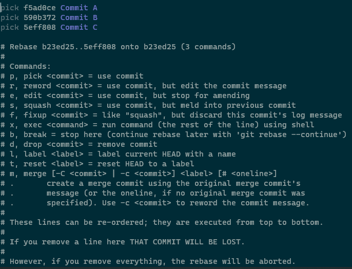

在 Git 工作流中，我们经常听到 “squash” 压缩一词，那么它表示什么呢？
本文，我们将简单地介绍什么是 Git squash，以及什么时候会需要它，最后，进一步了解如何 squash commits。
Git squash，意味着将多个连续的 commits 压缩合并成一个 commit。
例如：
1 2 3 4 5 6 7 8 9 10 11 ┌───┐ ┌───┐ ┌───┐ ┌───┐ ... │ A │◄─────┤ B │◄────┤ C │◄─────┤ D │ └───┘ └───┘ └───┘ └───┘ After Squashing commits B, C, and D: ┌───┐ ┌───┐ ... │ A │◄─────┤ E │ └───┘ └───┘ ( The commit E includes the changes in B, C, and D.)
在上面例子中，我们将 commits B，C 和 D 压缩成 E，其中 E 将会包含 B, C, D commits 中的变更。
接下来，我们讨论 Squash 应该什么时候使用。
简单地说，我们使用 squash 的目的是为了保持分支图整洁 。
不难想象，在实现新功能时，我们通常需要进行多次提交以最终达到一个满意的结果，这些提交中便不乏许多代码修复 fixes 以及测试，亦或一些临时代码（非生成代码）。
而在实现功能之后，这些提交便显得有些多余，因此，我们一般希望把这些多余的中间提交给压缩合并起来。
另外一个场景是在合并分支时压缩提交。
类似地，当我们开始新功能实现工作时，一般会创建出一个新的分支，然后在该分支上进行工作，通常会产生一系列提交。
在功能完成开发后，我们需要将功能分支合并到主分支上，此时，我们可以将功能分支的提交压缩合并成一个提交，这样做可以使主分支保持干净整洁。
现如今，许多现代 IDE，如 IDEA，Eclipse 等，都集成了常见的 Git 操作，因此我们便可使用 GUI 方式来压缩提交。
例如，在 IDEA 中，我们可以选择要压缩的提交，然后右键点击 “Squash Commits” 便可完成。
在本文中，我们将着重介绍如何使用 Git 命令完成提交的压缩。
squash 虽然是常用的操作，但它不是 Git 命令，并没有 git squash ... 这样的命令。
要压缩提交，我们通常有以下两种方式：
交互式 rebase: git rebase -i ... 带 -squash 选项的 merge： git merge -squash 在开始之前，我们先创建一个 Git 别名 (alias) slog ，来以更紧凑地方式查看 git 日志:
1 git config --global alias.slog = log --graph --all --topo-order --pretty='format:%h %ai %s%d (%an)'
接着，我们准备这样一个 git 仓库：
1 2 3 4 5 6 7 $git slog * 5eff808 2020-06-23 11:15:03 +0800 Commit C (HEAD -> master) (rovo98) * 590b372 2020-06-23 11:14:45 +0800 Commit B (rovo98) * f5ad0ce 2020-06-23 11:14:32 +0800 Commit A (rovo98) * b23ed25 2020-06-23 11:14:17 +0800 feature 1 implemented (rovo98) * 046c653 2020-06-23 11:13:40 +0800 bugfix #1 (rovo98) * 74e6656 2020-06-23 11:11:02 +0800 init (rovo98)
基于交互式 rebase 的方式，将会在默认编辑器中将所有相关的提交列出来。
然后我们便能在编辑器中处理每个提交及相应提交信息了。
一般地，当我们提到压缩上 X 个提交 时，是指从 HEAD 为基准的前 X 个提交。因此，在我们准备的仓库中，前 3 个提交是指：
1 2 3 * 5eff808 2020-06-23 11:15:03 +0800 Commit C (HEAD -> master) (rovo98) * 590b372 2020-06-23 11:14:45 +0800 Commit B (rovo98) * f5ad0ce 2020-06-23 11:14:32 +0800 Commit A (rovo98)
注意，如果我们想要压缩已经提到的远程仓库的提交，那么需要在本地仓库完成提交压缩后，强制 push 到远程仓库上。
一般地，强制 push 更新远程仓库是一个危险操作，有可能会覆盖他人的提交。因此，当我们确实需要强制 push 时，必须确保仅 push 到目标分支上。
例如，我们可以将 push.default 属性设置为 current，从而使仅当前分支可以被强制 push 到远程仓库。此外，我们也可以在要 push 的分支前加一个 + 号，如 git push origin +feature，这样也只有 feature 分支会被强制 push。
下面给出的是使用交互式 rebase 压缩前 X 个提交的语法：
因此，要压缩前 3 个提交，我们可以执行

可以看到，我们想压缩的 3 个提交都在 vim 中列了出来，顺序是自顶向下，命令均是 pick，为了压缩它们，我们可以将 pick 命令改为 squash：
保存并完成 rebase 后，可以执行 git log 看到的日志应该如下：
1 2 3 4 5 6 7 8 9 10 11 12 13 14 15 16 17 18 19 20 21 22 23 24 25 26 27 28 >git log commit d4d2165193b0e1e48fdb91c1bd3dc22684a43124 (HEAD -> master) Author: rovo98 <rovo98@163.com> Date: Thu Jun 23 11:14:32 2020 +0800 1. Commit A 2. Commit B 3. Commit C commit b23ed25d80d27f054e7b4b781f087b84bd8c653f Author: rovo98 <rovo98@163.com> Date: Thu Jun 23 11:14:17 2020 +0800 feature 1 implemented commit 046c653c33b6ef547453cea3c3f52e5d0d78fb4c Author: rovo98 <rovo98@163.com> Date: Thu Jun 23 11:13:40 2020 +0800 bugfix #1 commit 74e665623f4f679b100b4a537079531d3023b1bc Author: rovo98 <rovo98@163.com> Date: Thu Jun 23 11:11:02 2020 +0800 init
在上文，我们了解了如何使用 git rebase -i HEAD-X 来压缩 HEAD 的前 X 个提交。然而，但 X 相对较大时，我们便不太好去数 X 的值应该是多少 ，也比较容易出错。
因此，当 X 不容易计算时，我们可以直接找到要 rebase onto 的提交的 hash，然后执行 git 命令，git rebase -i hash_onto。
使用之前同样的仓库（可以 reset）:
1 2 3 4 5 6 7 $git slog * 5eff808 2020-06-23 11:15:03 +0800 Commit C (HEAD -> master) (rovo98) * 590b372 2020-06-23 11:14:45 +0800 Commit B (rovo98) * f5ad0ce 2020-06-23 11:14:32 +0800 Commit A (rovo98) * b23ed25 2020-06-23 11:14:17 +0800 feature 1 implemented (rovo98) * 046c653 2020-06-23 11:13:40 +0800 bugfix #1 (rovo98) * 74e6656 2020-06-23 11:11:02 +0800 init (rovo98)
现在，假设我们要基于 b23ed25 (feature 1 implemeted) 提交进行 rebase，那么可以不用去数它之后有多少个提交，直接执行 git rebase -i b23ed25 ，随后在编辑器中对涉及的提交进行处理即可。
在前文中，我已经了解到 Git 交互式 rebase 可用于压缩提交，这种方式可以用于高效地整理一个分支。
但有些时候，我们需要将功能开发分支的提交合并到主分支上，且保持整洁性 - 如一个功能一次提交。
在这种场景中，我们可以使用 git merge -squash 命令来进行处理。
1 2 3 4 5 6 7 8 9 10 11 12 >git slog * e0efc04 2020-06-23 14:44:14 +0800 doc: update README (HEAD -> master) (rovo98) | * 664d774 2020-06-23 14:43:07 +0800 finished feature dev (feature2) (rovo98) | * 55ed447 2020-06-23 14:42:37 +0800 feat: add test cases (rovo98) | * b73870d 2020-06-23 14:42:13 +0800 hotfix: fix typo (rovo98) | * 884d66b 2020-06-23 14:41:26 +0800 update contents (rovo98) | * ec7e715 2020-06-23 14:40:34 +0800 add req doc (rovo98) |/ * 627092a 2020-06-20 11:14:32 +0800 Commit A (rovo98) * b23ed25 2020-06-20 11:14:17 +0800 feature 1 implemented (rovo98) * 046c653 2020-06-20 11:13:40 +0800 bugfix #1 (rovo98) * 74e6656 2020-06-20 11:11:02 +0800 init (rovo98)
在上面这个仓库中，可以看到，我们在分支 feature2 中实现了一个功能点，共提交了 5 个 commit。现在，我们将会把 feature2 分支中的提交压缩成一个提交并合并到 master 主分支上。
1 2 3 4 5 6 > git checkout master Switched to branch 'master' >git merge --squash feature2 Automatic merge went well; stopped before committing as requested Squash commit -- not updating HEAD
不同于常规的 merge，带 --squash 选项的 git merge 不会自动创建出一个 merge commit 来。相对地，它会将源分支（此例是 feature2）所有修改都带到当前本地仓库工作空间中。
1 2 3 4 5 6 >git status On branch master Changes to be committed: (use "git restore --staged <file>..." to unstage) new file: feature2_req.txt new file: testcase.txt
此时，我们可以提交这些修改，生成一个新的 commit 到主分支上。
1 2 3 4 5 > git commit -am "Squashed and merged the feature2 branch" [master 7de7bd2] Squahed and merged the feature2 branch 2 files changed, 3 insertions(+) create mode 100644 feature2_req.txt create mode 100644 testcase.txt
再次检查一下分支图情况：
1 2 3 4 5 6 7 8 9 10 11 12 13 >git slog * 7de7bd2 2020-06-23 14:55:45 +0800 Squahed and merged the feature2 branch (HEAD -> master) (rovo98) * e0efc04 2020-06-23 14:44:14 +0800 doc: update README (rovo98) | * 664d774 2020-06-23 14:43:07 +0800 finished feature dev (feature2) (rovo98) | * 55ed447 2020-06-23 14:42:37 +0800 feat: add test cases (rovo98) | * b73870d 2020-06-23 14:42:13 +0800 hotfix: fix typo (rovo98) | * 884d66b 2020-06-23 14:41:26 +0800 update contents (rovo98) | * ec7e715 2020-06-23 14:40:34 +0800 add req doc (rovo98) |/ * 627092a 2020-06-23 11:14:32 +0800 Commit A (rovo98) * b23ed25 2020-06-23 11:14:17 +0800 feature 1 implemented (rovo98) * 046c653 2020-06-23 11:13:40 +0800 bugfix #1 (rovo98) * 74e6656 2020-06-23 11:11:02 +0800 init (rovo98)
可以看到，我们已经将 feature2 的修改合并到 master 主分支上，相应的 commit 为 7de7bd2。
https://www.baeldung.com/ops/git-squash-commits 更多：